# ShooterClient 游戏分析
# 查看游戏引擎
- ShooterClient 游戏分析部分的 UWorld、Gname 和 GObject 分析参考了：https://www.52pojie.cn/thread-1696816-1-1.html
右键查看 ShooterClient.exe 属性，点击详细信息。
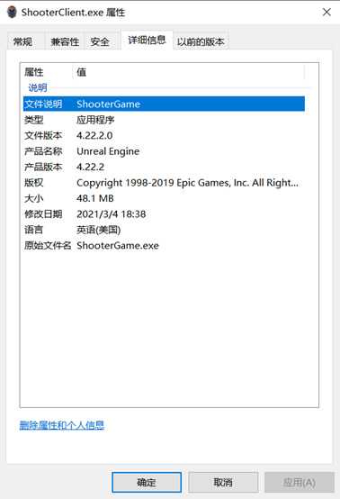
可以得知 ShooterClient 是由 Epic Games 的 Unreal Engine 4.22.2.0 开发的。
# UWorld 分析
分析查找 UWorld，用 x64dbg 附加到游戏，右键 “搜索”—“所有模块”—“字符串”。
按下 “Ctrl+F”，搜索字符串 SeamlessTravel FlushLevelStreaming。
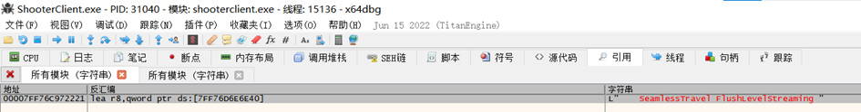双击跳转到该地址，向上翻，找到语句‘btr edx,0x7’，再向上翻找到第一个基地址，即语句 'mov qword ptr ds:[7FF76DFC1060]' 中的地址即为 UWorld。
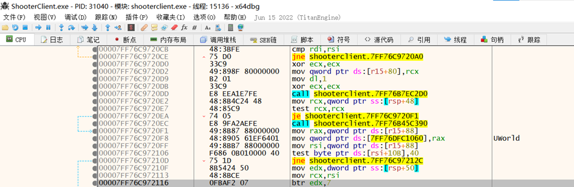分析可知，UWorld 的地址为：
UWorld = ShooterClient.exe + 0x2F71060
# Gname 分析
下面开始分析 GName。
将 Cheat Engine 附加到游戏，搜索字符串 ByteProperty。
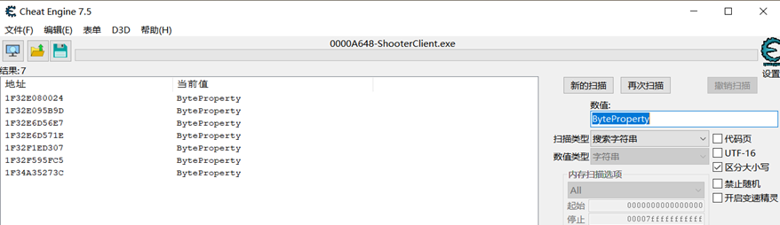依次选择每个地址，查看附近内存，选择附近内存包含 “None”“IntProperty” 等字符串的地址，最终锁定为地址‘1F32E080024’。
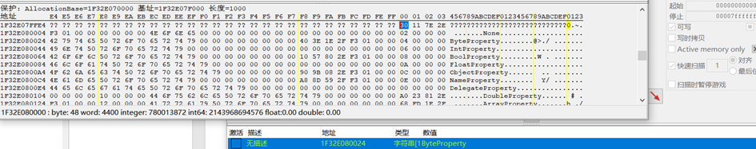分析字符串之间的间隔，选择该片内存地址的第一个地址，即 1F32E080000，在 CE 中搜索这个地址。
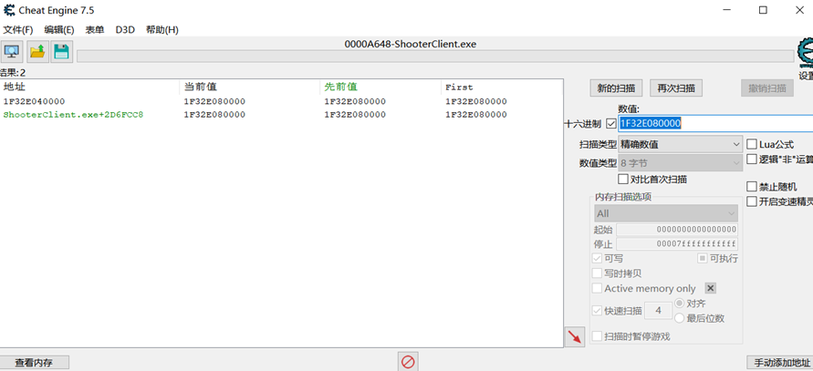继续选择地址 1F32E040000 作为新的扫描值，搜索地址。
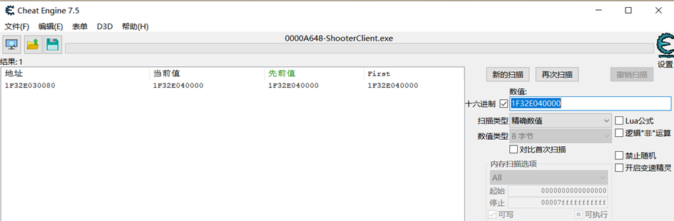继续选择地址 1F32E030080 作为新的扫描值，搜索地址。
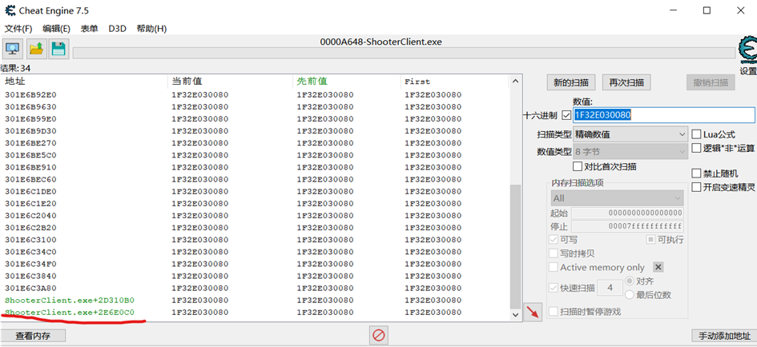此时得到两个偏移地址，先暂存，后续代码验证发现 “ShooterClient.exe+2E6E0C0” 为 GName 偏移结果。故 GName 地址为：GName = ShooterClient.exe + 2E6E0C0
# GObject 分析
下面开始分析 Gobject。
用 x64dbg 附加到游戏，搜索字符串 “CanvasObject”。
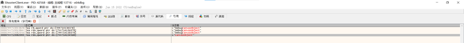双击跳转到该地址，向上翻，找到语句‘sar eax,10’。这一条下面的基地址就是 GObject。


故 GObject 结果为：GObject = ShooterClient.exe + 2B8CA70
# 分析实现
# sdk dump
采用工具：UnrealEngineSDKGenerator 进行 dump 生成 sdk。工具如图所示。
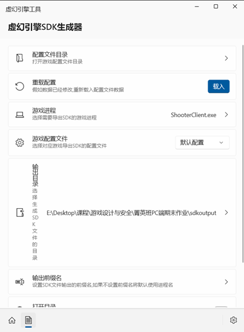
- 在游戏配置文件中修改 Gnames、GObjects 等参数后进行生成。
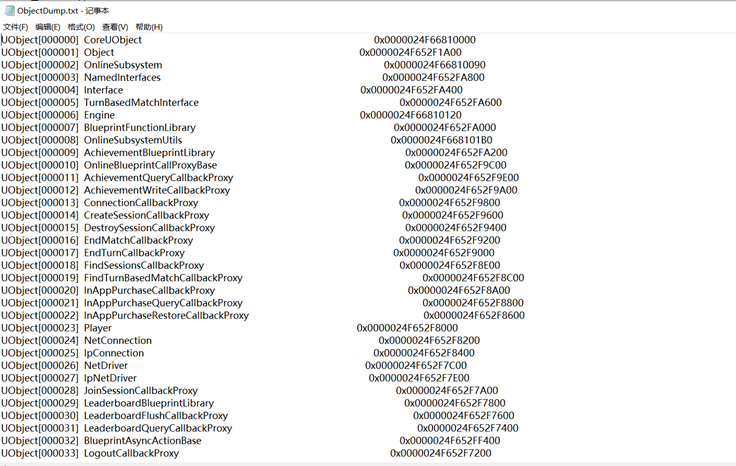
# 代码验证
#include <iostream> | |
#include <windows.h> | |
#include <string.h> | |
#include <thread> | |
#include <cstdint> | |
#include <tlhelp32.h> | |
#define GameProcessName "ShooterClient.exe" | |
class Memory { | |
private: | |
std::string processName; | |
HANDLE processHandle; | |
public: | |
Memory() : processHandle(NULL) {} | |
void SetProcessName(const std::string& name) { | |
processName = name; | |
HANDLE hSnapshot = CreateToolhelp32Snapshot(TH32CS_SNAPPROCESS, 0); | |
if (hSnapshot) { | |
PROCESSENTRY32 pe32; | |
pe32.dwSize = sizeof(PROCESSENTRY32); | |
if (Process32First(hSnapshot, &pe32)) { | |
do { | |
if (strcmp(pe32.szExeFile, processName.c_str()) == 0) { | |
processHandle = OpenProcess(PROCESS_ALL_ACCESS, FALSE, pe32.th32ProcessID); | |
break; | |
} | |
} while (Process32Next(hSnapshot, &pe32)); | |
} | |
CloseHandle(hSnapshot); | |
} | |
} | |
template<typename T> | |
T Read(uint64_t address) { | |
T value; | |
if (processHandle) { | |
SIZE_T bytesRead; | |
ReadProcessMemory(processHandle, (LPCVOID)address, &value, sizeof(T), &bytesRead); | |
} | |
return value; | |
} | |
uint64_t GetProcessBaseAddress() { | |
uint64_t baseAddress = 0; | |
HANDLE hSnapshot = CreateToolhelp32Snapshot(TH32CS_SNAPMODULE | TH32CS_SNAPMODULE32, GetProcessId(processHandle)); | |
if (hSnapshot != INVALID_HANDLE_VALUE) { | |
MODULEENTRY32 moduleEntry; | |
moduleEntry.dwSize = sizeof(MODULEENTRY32); | |
if (Module32First(hSnapshot, &moduleEntry)) { | |
do { | |
if (strcmp(moduleEntry.szModule, processName.c_str()) == 0) { | |
baseAddress = (uint64_t)moduleEntry.modBaseAddr; | |
break; | |
} | |
} while (Module32Next(hSnapshot, &moduleEntry)); | |
} | |
CloseHandle(hSnapshot); | |
} | |
return baseAddress; | |
} | |
bool ReadBuffer(uint64_t address, void* buffer, SIZE_T bufferSize) { | |
if (processHandle && buffer != nullptr) { | |
SIZE_T bytesRead; | |
return ReadProcessMemory(processHandle, (LPCVOID)address, buffer, bufferSize, &bytesRead) != 0; | |
} | |
return false; | |
} | |
~Memory() { | |
if (processHandle) { | |
CloseHandle(processHandle); | |
} | |
} | |
}; | |
Memory* pMemory; | |
struct GlobalAddress { | |
static uint64_t BaseAddress; | |
static uint64_t GNames; | |
}; | |
uint64_t GlobalAddress::BaseAddress; | |
uint64_t GlobalAddress::GNames; | |
void ShooterClient_Loop(); | |
std::string GetNameFormId_(uint32_t Id){ | |
int ChunkIndex = Id / 0x4000; | |
int WithinChunkIndex = Id % 0x4000; | |
uint64_t NamePtr = pMemory->Read<uint64_t>(GlobalAddress::GNames + 0x8 * ChunkIndex); | |
uint64_t FName = pMemory->Read<uint64_t>(NamePtr + 0x8 * WithinChunkIndex); | |
CHAR name[256]; | |
pMemory->ReadBuffer(FName+0xc,name,sizeof(name)); | |
return std::string(name); | |
} | |
void ShooterClient_Loop(){ | |
uint64_t UWorld = pMemory->Read<uint64_t>(GlobalAddress::BaseAddress + 0x2F71060); | |
uint64_t ULeval = pMemory->Read<uint64_t>(UWorld + 0x30); | |
uint64_t Actor = pMemory->Read<uint64_t>(ULeval + 0x98); | |
uint32_t Actor_Count = pMemory->Read<uint32_t>(ULeval + 0x98 + 0x8); | |
for(int i=0;i<Actor_Count;++i){ | |
uint64_t pObject = pMemory->Read<uint64_t>(Actor + i * 0x8); | |
uint32_t ObjectId = pMemory->Read<uint32_t>(pObject + 0x18); | |
// std::cout<<"pObject: "<<pObject<<'\n'; | |
std::string ObjectName = GetNameFormId_(ObjectId); | |
// std::cout<<"ObjectName: "<<ObjectName<<'\n'; | |
if (!ObjectName.compare("BotPawn_C")) { | |
uint64_t botPositionAddress; | |
FLOAT bot[3]; | |
if (pMemory->ReadBuffer((uint64_t)pObject + 0x3A0, &botPositionAddress, sizeof(botPositionAddress))) { | |
if (pMemory->ReadBuffer(botPositionAddress + 0x1A0, bot, sizeof(bot))) { | |
printf("bot location: [x:%f, y:%f, z:%f]\n", bot[0], bot[1], bot[2]); | |
} | |
} | |
} | |
} | |
} | |
int main(){ | |
pMemory = new Memory; | |
pMemory->SetProcessName(GameProcessName); | |
GlobalAddress::BaseAddress = pMemory->GetProcessBaseAddress(); | |
GlobalAddress::GNames = pMemory->Read<uint64_t>(GlobalAddress::BaseAddress + 0x2e6e0c0); | |
while(true){ | |
ShooterClient_Loop(); | |
Sleep(1000); | |
} | |
return 0; | |
} |
- ShooterClient_Loop () 遍历游戏对象的列表，检查它们的名称是否与 "BotPawn_C" 匹配，如果是，则提取并打印它们的位置。
- Memory 类负责处理与内存相关的操作。其中：
- SetProcessName 函数设置进程名称，并尝试使用 Windows ToolHelp 函数打开对指定进程的句柄；
- Read 函数从指定地址的进程内存中读取指定类型的值；
- GetProcessBaseAddress 函数通过列举模块来检索进程的基址；
- ReadBuffer 函数从进程内存中读取数据缓冲区。
# 实现结果
首先打印所有 Object。
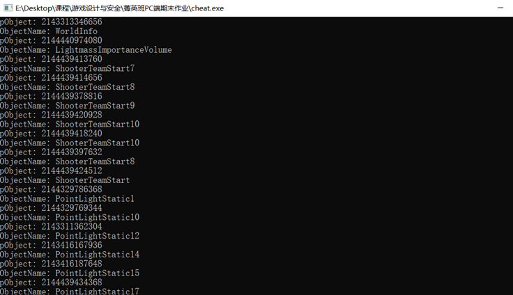尝试每隔 1 秒打印机器人位置坐标。
# hack 分析
# Detect it easy 查壳
- 用 Detect It Easy 查看 hack.exe 文件加壳情况。如图 1 所示。
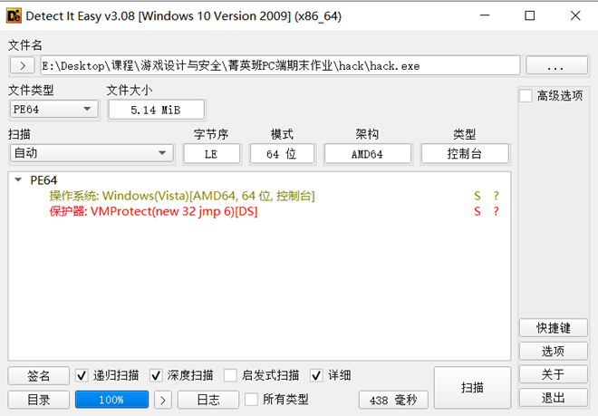 - 可知，hack.exe 通过 VMProtect 加壳。
# 导入函数分析
- 用 ida64 查看 imports 导入函数，分析可能对调试有帮助的函数。
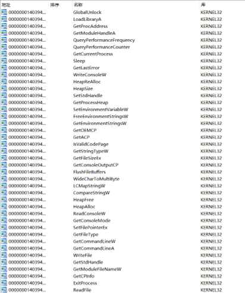 - 可以看到，导入函数中包括了：
- 反调试：
- IsDebuggerPresent 检测是否在调试器下运行
- 进程和线程操作：
- GetCurrentProcess, GetCurrentProcessId: 获取当前进程及其 ID。
- CreateToolhelp32Snapshot, Process32First, Process32Next: 进程遍历函数。
- OpenProcess, TerminateProcess: 打开或终止进程。
- CreateEventW, SetEvent, WaitForSingleObject: 事件操作函数。
- GetThreadLocale, GetUserDefaultLCID, GetSystemDefaultLCID: 处理地区和语言信息。
- 内存和堆操作：
- GlobalAlloc, GlobalFree, GlobalLock, GlobalUnlock: 全局内存操作函数。
- HeapAlloc, HeapFree: 堆内存操作函数。
- LocalAlloc, LocalFree: 本地内存操作函数。
- 鼠标操作：
- SetCursorPos, GetCursorPos, SetCapture, ReleaseCapture: 鼠标操作。
- 反调试：
通过导入函数，猜测 hack.exe 主要通过：
- 使用 CreateToolhelp32Snapshot、Process32First 和 Process32Next 等函数遍历系统进程，找到游戏进程；
- 使用 ReadProcessMemory 函数读取游戏进程的内存，包括机器人的位置信息；
- 使用 GetAsyncKeyState 获取按键状态，判断是否按下鼠标右键；
- 如果获取鼠标按下右键，则调用 SetCursorPos 设置鼠标位置，用于自动瞄准。
# x64dbg 调试查找 OEP
# 方法一
- 使用 x64dbg 调试 hack.exe，使用 ScyllaHide 插件绕过反调试，将 Loaded 选项设置为 VMProtect x86/x64。
- 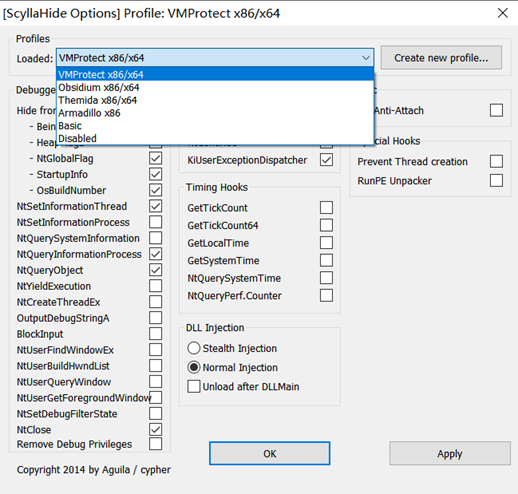
- 一次‘运行’后，hack.exe 来到 Entrypoint，紧接着三次‘运行’，hack.exe 在三次‘nop’指令后正常运行。
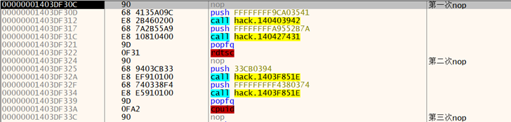 - 从 Entrypoint 处重新开始调试，一直单步步过，直到语句‘pushfq’，如所示。
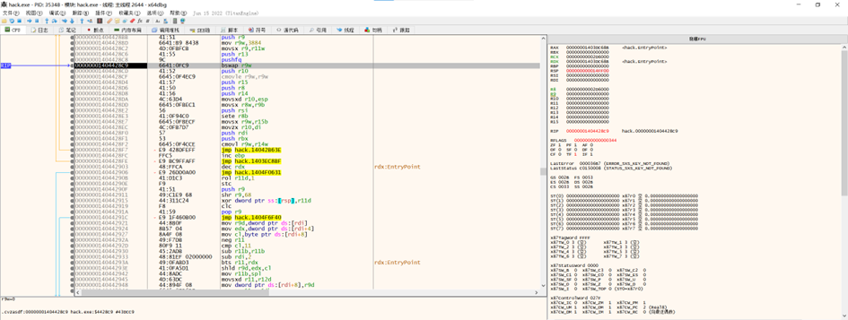 - 发现只有 RSP 寄存器发生变化，符合 ESP 脱壳定律，右键点击 RSP，选择 “在内存窗口中转到”，对此时的 RSP 值 “14FF00” 下硬件访问断点。
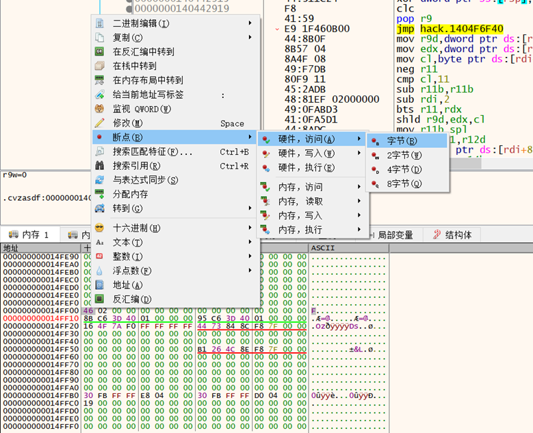 - 一直 F9，经过三次 nop 和多次无关指令后停留在下图所示处。
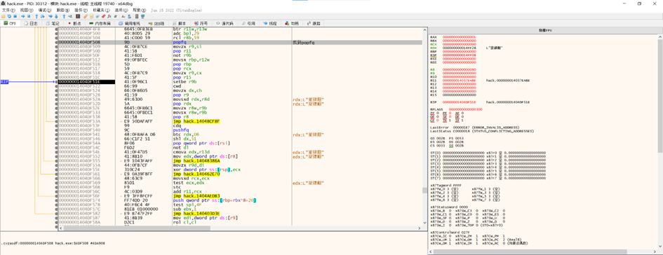 - 发现此时 RSP（14FF08）接近 pushfq 时的（14FF00），且在当前代码上方找到 popfq。
- 继续单步步入，程序 jmp 到图 8 所示位置，观察这部分代码：
sub rsp 28” + call + “add rsp 28，为 Visual Studio 程序的常见脱壳入口点，故得到 OEP，即 140052188。
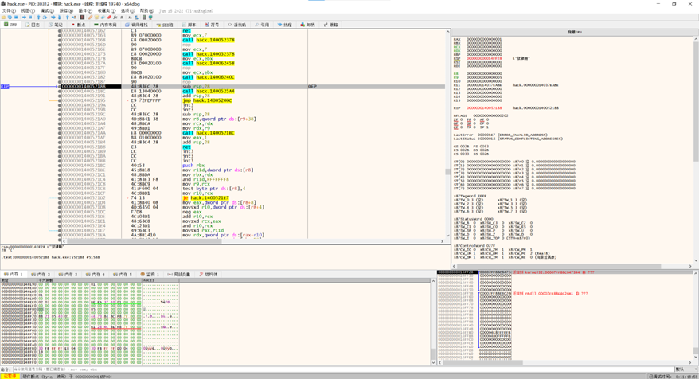
常见脱壳入口点：https://www.jianshu.com/p/96a6dd6a0ce5。
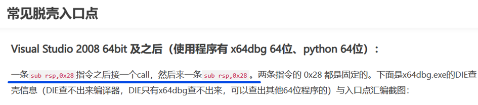
# 方法二
根据 2.2 导入函数分析的结果，选择‘CreateToolhelp32Snapshot’作为断点进行调试最合适。在 x64dbg 中按下‘Ctrl + G’，输入‘CreateToolhelp32Snapshot’，转到地址，设置断点，结果如下图所示。

继续调试，发现程序会两次停留在‘CreateToolhelp32Snapshot’处的断点，其中第二次断下时，RAX 的值为 “ShooterClient.exe”，故猜测此次为查找游戏进程。
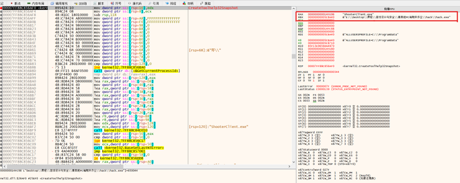查看此时的调用堆栈，如下图所示。
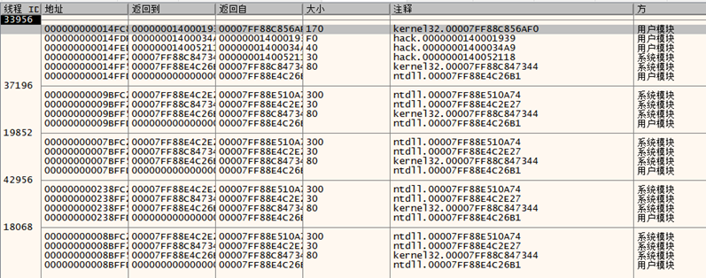根据此时的断点位置（kernel32.00007FF88C856AF0），锁定在 33956 线程，如图 13 所示。
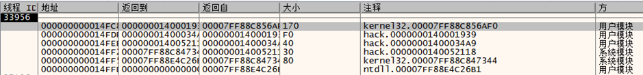从下往上查找第一个以 hack 为基地址的地址，锁定在 hack.0000000140052118，双击跳转到该地址。
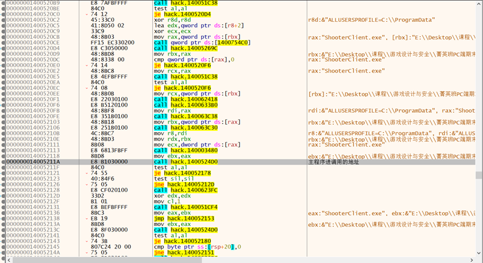向上找到程序入口，找到该片段的第一条指令，地址为 14005200C，如下图所示。
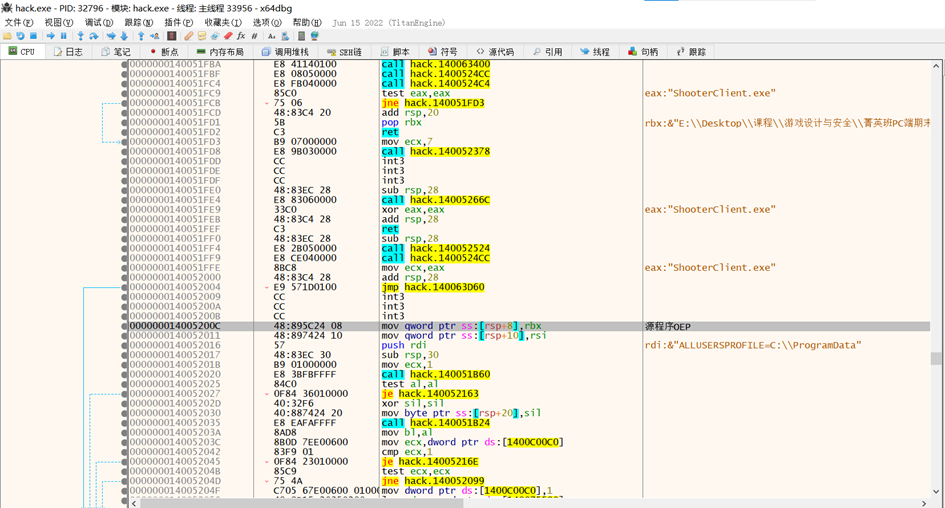单击右键，查找引用 — 选中的地址。
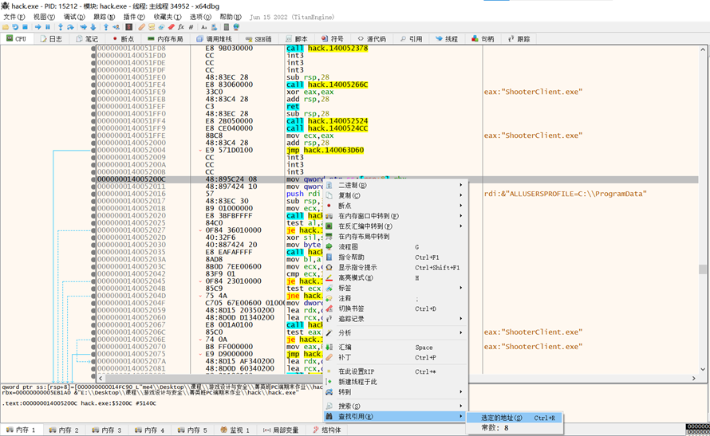
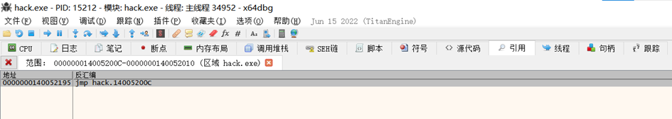找到地址，双击进入查看，同样能找到 OEP。


# 脱壳
- 使用 x64dbg 自带的 scylla 插件 dump 脱壳。点击‘dump’，再点击 IAT Autosearch，最后点击 Get Imports，结果如下图所示。
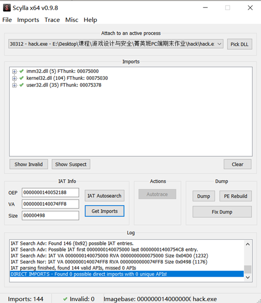 - 点击‘Fix Dump’，得到脱壳后的程序 hack_dump_SCY.exe。
- 使用 DIE 查看脱壳结果，如下图所示。
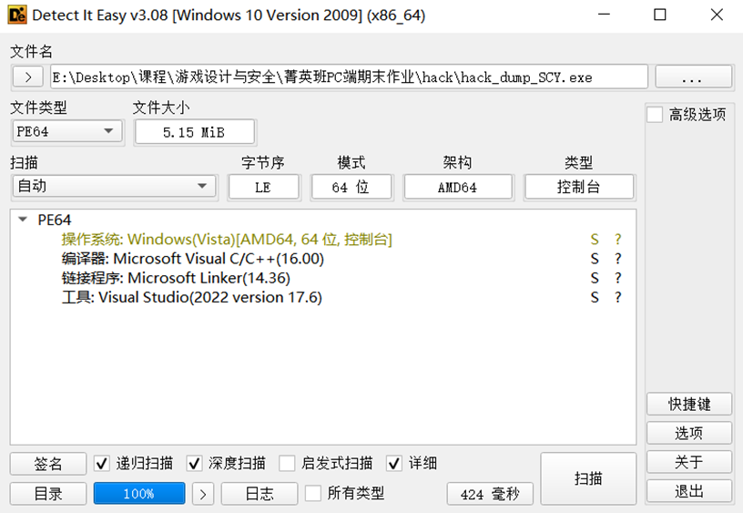 - 说明脱壳成功，打开 hack_dump_SCY.exe，文件能正常运行。
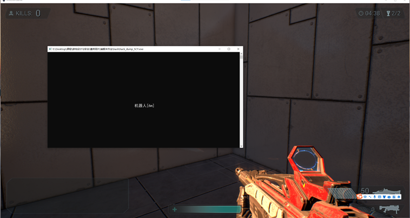
# IDA 分析脱壳后的文件
# main 函数分析
用 IDA 打开脱壳后的 hack_dump_SCY.exe，“Ctrl + F” 查找 main 函数，分析 main 函数逻辑。
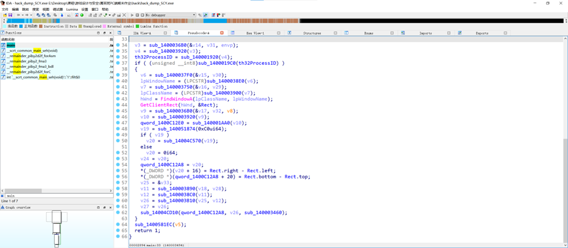依次分析 main 中的主要代码，主要函数逻辑用注释标出。
int __cdecl main(int argc, const char **argv, const char **envp) | |
{ | |
char *v3; // rax | |
__int64 v4; // rax | |
char *v5; // rax | |
char *v6; // rax | |
char *v7; // rax | |
__int64 v8; // rax | |
void *v9; // rax | |
__int64 v10; // rax | |
char v12; // [rsp+21h] [rbp-C7h] BYREF | |
char v13; // [rsp+22h] [rbp-C6h] BYREF | |
char v14; // [rsp+23h] [rbp-C5h] BYREF | |
char v15; // [rsp+24h] [rbp-C4h] BYREF | |
char v16[3]; // [rsp+25h] [rbp-C3h] BYREF | |
void *v17; // [rsp+28h] [rbp-C0h] | |
__int64 v18; // [rsp+30h] [rbp-B8h] | |
LPCSTR lpWindowName; // [rsp+38h] [rbp-B0h] | |
LPCSTR lpClassName; // [rsp+40h] [rbp-A8h] | |
HWND hWnd; // [rsp+48h] [rbp-A0h] | |
__int64 v22; // [rsp+50h] [rbp-98h] | |
char *v23; // [rsp+58h] [rbp-90h] | |
__int64 v24; // [rsp+60h] [rbp-88h] | |
__int64 v25; // [rsp+68h] [rbp-80h] | |
char v26[11]; // [rsp+70h] [rbp-78h] BYREF | |
char v27[13]; // [rsp+7Bh] [rbp-6Dh] BYREF | |
char v28[14]; // [rsp+88h] [rbp-60h] BYREF | |
char v29[18]; // [rsp+96h] [rbp-52h] BYREF | |
char v30[24]; // [rsp+A8h] [rbp-40h] BYREF | |
char v31; // [rsp+C0h] [rbp-28h] BYREF | |
v3 = sub_1400036B0((__int64)&v12, v29); // 读取 th32ProcessID 解混淆前的数据 | |
v4 = sub_140003920((__int64)v3); // 解混淆得到 "ShooterClient.exe" | |
th32ProcessID = sub_140001920(v4); // 获取游戏进程的 ID | |
if ( (unsigned __int8)sub_1400019C0(th32ProcessID) )// 检查游戏进程是否存在 | |
{ | |
v5 = sub_1400037F0((__int64)&v13, v28); // 读取 lpWindowName 解混淆前的数据 | |
lpWindowName = (LPCSTR)sub_1400038E0((__int64)v5);// 解混淆得到 "ShooterGame" | |
v6 = sub_140003750((__int64)&v14, v27); // 读取 lpClassName 解混淆前的数据 | |
lpClassName = (LPCSTR)sub_140003900((__int64)v6);// 解混淆得到 "UnrealWindow" | |
hWnd = FindWindowA(lpClassName, lpWindowName);// 根据窗口类名和窗口标题查找游戏窗口的句柄 | |
GetClientRect(hWnd, &Rect); // 获取游戏窗口的坐标 | |
v7 = sub_1400036B0((__int64)&v15, v30); // 读取数据 | |
v8 = sub_140003920((__int64)v7); // 解混淆得到 "ShooterClient.exe" | |
qword_1400C12E0 = (__int64)sub_140001AA0(v8);// 遍历进程，找到游戏模块的基址 | |
v17 = sub_140051874(0xC0ui64); // 申请一块内存 | |
if ( v17 ) // 申请内存成功 | |
v18 = sub_14004C570((__int64)v17); // 初始化内存 | |
else | |
v18 = 0i64; | |
v22 = v18; | |
qword_1400C12A8 = v18; // 将初始化的内存地址保存到全局变量中 | |
*(_DWORD *)(v18 + 16) = Rect.right - Rect.left;// 将窗口的宽度保存到内存中 | |
*(_DWORD *)(qword_1400C12A8 + 20) = Rect.bottom - Rect.top;// 将窗口的高度保存到内存中 | |
v23 = &v31; | |
v9 = sub_140003890((__int64)v16, v26); // 读取混淆前数据 | |
v10 = sub_1400038C0((__int64)v9); // 解混淆得到 "simhei.ttf"(一种字体) | |
v24 = sub_140003B10((__int64)v23, v10); // 设置字体为 simhei.ttf | |
v25 = v24; | |
sub_14004CD10(qword_1400C12A8, v24, (__int64)sub_140003460);// 根据初始化的内存，以 simhei.ttf 为字体，创建一个窗口，实现作弊逻辑 | |
} | |
sub_1400581EC(); | |
return 1; | |
} |
# 读取数据解混淆
- Hack.exe 对 th32ProcessID、lpWindowName 和 lpClassName 都做了混淆处理。且混淆方法相同，下面以 th32ProcessID 为例进行解混淆。
# sub_1400036B0 函数
- sub_1400036B0 函数用于读取混淆后的数据，sub_140003920 函数用于解混淆。
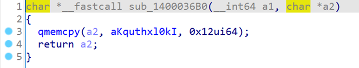 - 查看 aKquthxl0kI 的值，如下图所示。
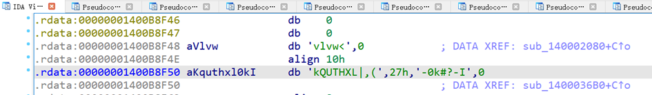
# sub_140003920 函数
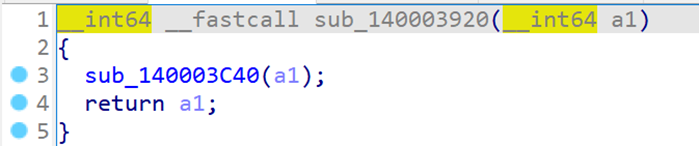
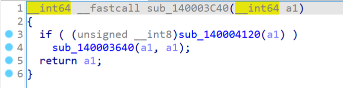
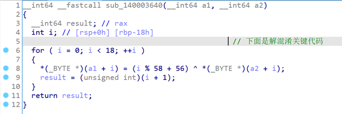
- sub_140003640 函数中包含解混淆关键代码。
- 结合 sub_1400036B0 函数读取的数据，编写代码验证结果，结果如下图所示。
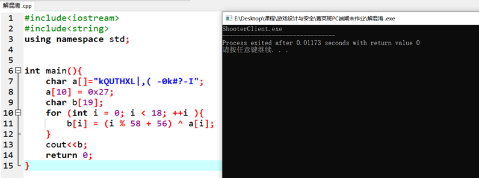 - 分析可知，程序加密了读取的游戏进程名称，并在程序开始时通过解混淆得到该名称，加大了分析难度。
- 其他解混淆结果如下图所示。
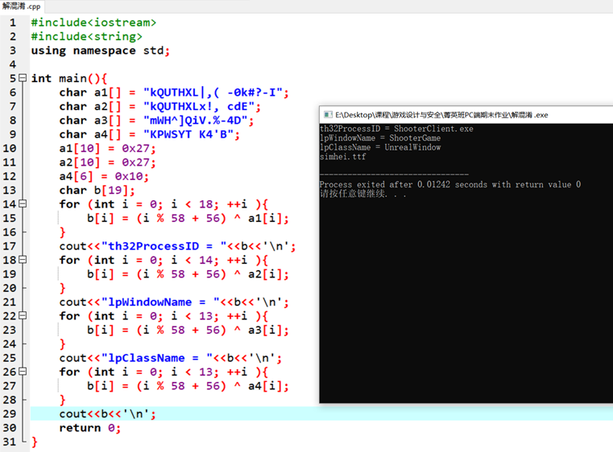
# 作弊逻辑实现
- 根据 main 函数分析，不难得出，程序解混淆、找到游戏进程、获取偏移后会开始实现主要作弊逻辑。并且，根据对 hack.exe 的使用，作弊会在弹窗、根据用户选择作弊功能后开始进行。因此，依次查看弹窗后的调用的函数，寻找作弊代码，最终锁定在 sub_140003460 () 函数。
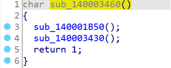 - 分别查看 sub_140001B50 () 和 sub_140003430 () 的代码。
# sub_140001B50 () 函数
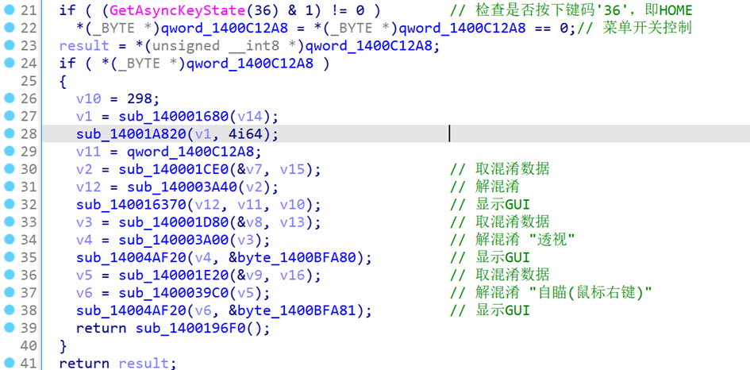
- 第 21 行程序调用 GetAsyncKeyState 函数，查看键码表可知，36 对应的是 HOME 键，打开 hack.exe，可以发现，HOME 键可以切换菜单的开关，故猜测该部分代码是实现菜单窗口逻辑。
- 依次分析 if 中的函数，其主要逻辑和之前分析的解混淆相似，有两个取解混淆后的数据的函数，猜测是为了生成 UI。
# sub_140003430 () 函数
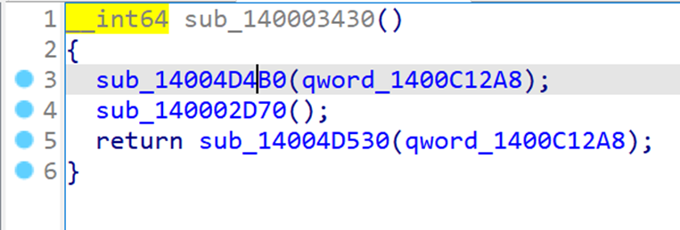
- 依次查看这几个函数，在 sub_140002D70 () 中找到熟悉的代码片段。
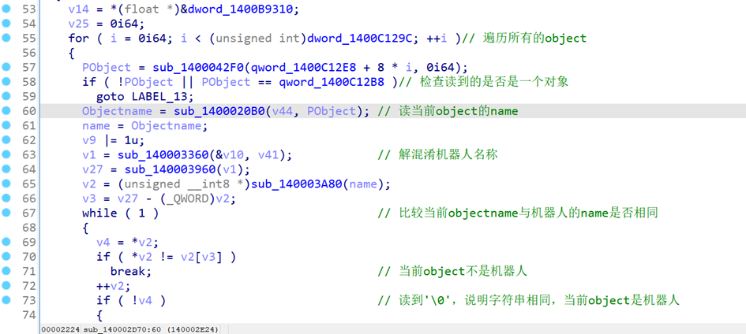 - 55 行至 57 行的代码与 1.5.2 代码验证中的遍历对象代码形式相同，且偏移量 8*i 也相同，引起注意。仔细分析，可以发现该部分主要用于遍历所有的 Object 读取 name，与解混淆后的字符串比对，判断是否为机器人，若是机器人，则跳转执行后续操作。
- 通过第 97 行 sub_140004350 () 中的 ReadProcessMemory 函数读取机器人坐标。
- 外挂通过调用 ReadProcessMemory 函数，遍历所有 Actor 对象并过滤得到机器人的地址，再通过偏移得到各数据信息。
- 再通过对将世界坐标系到视图坐标系的转换，将机器人坐标显示在屏幕上。
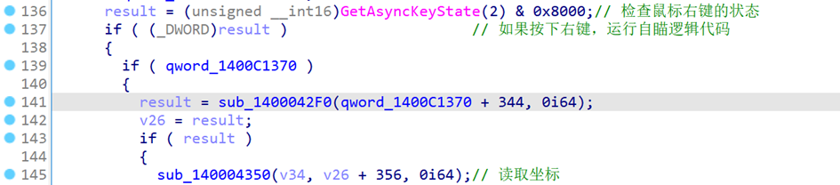 - 第 136 行检查鼠标右键状态，并在第 145 行再次读取坐标，说明该部分代码主要实现自瞄逻辑。读取到机器人坐标，映射在屏幕上，再转换玩家视角，实现自瞄功能。